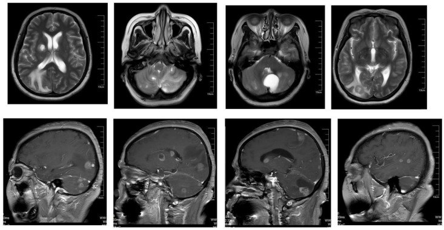
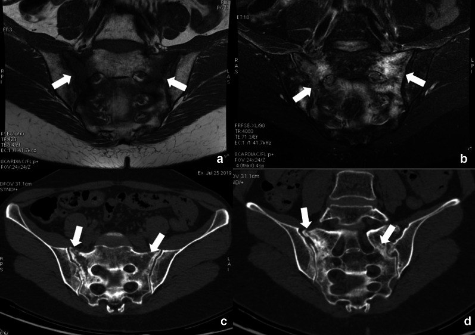
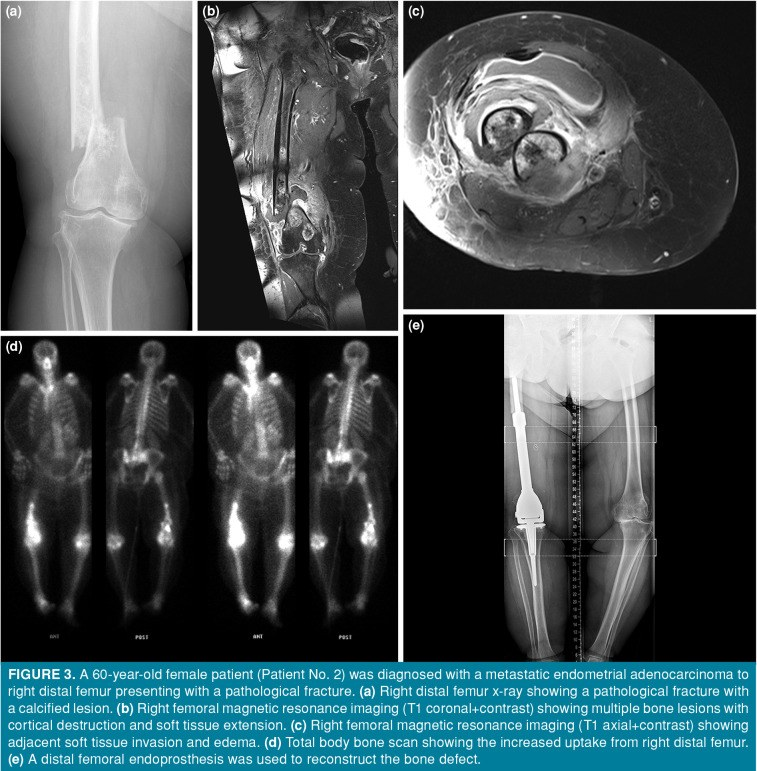

581 — Di căn não & xương trong ung thư phụ khoa: MRI não, SRS vs WBRT, PET xương/PSMA & theo dõi sau 577 / Brain and bone metastases in gynecologic cancer
Tags: pattern:di-can-nao pattern:di-can-xuong vung:nao vung:xuong score:RANO-BM score:Mirels protocol:MRI-nao protocol:SRS protocol:CT-xuong incidentaloma:gay-xuong-suy-yeu
Mức chắc chắn (certainty): tổng hợp y văn (literature synthesis) — nhóm tự biên từ y văn mở (BMC Cancer, Front Oncol, Cancers, Insights Imaging, Joint Dis Relat Surg), có ca nguyên văn minh họa trong quiz.
Câu chốt của bài: di căn não và xương là hai cửa di căn xa "dễ đọc sai" của ung thư phụ khoa. Não: MRI có cản quang + DWI là chuẩn (CT bỏ sót tổn thương < 1 cm và tổn thương vỏ); SRS cho 1–4 ổ, u < 4 cm, ECOG 0–2; WBRT không kéo dài sống, làm giảm nhận thức → chỉ dùng khi nhiều ổ/leptomeningeal. Xương: đau + tiêu xương trên CT + phù tủy trên MRI; phân biệt với gãy xương suy yếu sau xạ (đối xứng, không có khối mô mềm); Mirels ≥ 9 = cố định dự phòng, chèn ép tủy = MRI toàn bộ cột sống trong 24 giờ + dexamethasone.
1. Tổng quan bệnh học – cơ chế hình ảnh
- Dịch tễ (ngưỡng định lượng): di căn não gặp ở ~2,5–6,0% ung thư buồng trứng, sống còn 5 năm chỉ 29,2%; trong loạt 129 ca OCBM, thời gian trung vị từ chẩn đoán buồng trứng đến di căn não 25,74 tháng (0–103,1), sống còn trung vị sau di căn não 19,53 tháng, 43,4% một ổ / 55,0% nhiều ổ, đường kính lớn nhất trung vị 2,7 cm, 63,6% được chẩn đoán bằng MRI (Wang 2025, PMC12595899). Di căn não ở ung thư nội mạc rất hiếm; thể POLE-mutated có thể sống dài hơn trung vị y văn dù đã di căn não (Ebner 2025, PMC12433838).
- Di căn xương: tại thời điểm chẩn đoán ung thư cổ tử cung, 2,42% (469/19.363) đã có di căn xương (SEER 2010–2015; Zhang 2018, PMC6146765). Ở ung thư nội mạc, di căn xương xuất hiện trung vị 34,4 tháng sau chẩn đoán; 36% có gãy xương bệnh lý và 64% đau kháng trị là chỉ định mổ trong loạt 14 ca được phẫu thuật (Ozturk Basarir 2023, PMC9903106). Đây là các con số của nhóm đã mổ — không đại diện toàn bộ quần thể.
- TẠI SAO di căn não ngấm thuốc: u di căn làm phá vỡ hàng rào máu–não (BBB) → gadolinium thoát vào khoảng kẽ → T1W sau tiêm ngấm dạng nốt/viền. Phù quanh u là phù mạch (vasogenic) → T2/FLAIR sáng, lan theo chất trắng, không theo ranh giới vỏ; phù không ngấm thuốc và không hạn chế khuếch tán (ADC không thấp như u đặc).
- TẠI SAO cần DWI/ADC: u đặc mật độ tế bào cao → DWI sáng + ADC thấp; phù/hoại tử → ADC cao. Sau SRS, hoại tử xạ (radionecrosis) cũng có thể ngấm thuốc và phù — DWI/ADC không đủ phân biệt, cần tưới máu (DSC rCBV), MRS (choline/NAA), FET-PET và diễn tiến thời gian.
- TẠI SAO xương tiêu trên CT: tế bào u hoạt hóa hủy cốt bào → mất xương bè → vùng giảm đậm độ, bờ không rõ trên CT cửa sổ xương; tái tạo xương (đặc/ly giải hỗn hợp) gặp ở một số thể. Trên MRI, u thay thế tủy vàng → T1W tối hơn cơ/đĩa đệm, STIR/T2FS sáng, ngấm thuốc; phù tủy lan rộng quanh ổ di căn.
- Cơ chế di căn: lan theo đường máu (đám rối Batson cho cột sống/khung chậu); ung thư buồng trứng lan phúc mạc trước rồi mới tới não; ung thư cổ tử cung/nội mạc lan hạch → máu.
2. Mẫu hình + chẩn đoán phân biệt theo vị trí (gamut)
- Não — một ổ: di căn đơn độc (vỏ–dưới vỏ, ngấm dạng nốt/viền, phù rộng không tương xứng kích thước), u nguyên phát (glioblastoma: hoại tử trung tâm, viền dày không đều), u lympho TKTW (đồng nhất, sát não thất, ADC rất thấp), áp-xe (viền mỏng đều + DWI trung tâm sáng/ADC thấp), u màng não (ngoài trục, dấu đuôi màng cứng), nhồi máu/viêm tủy.
- Não — nhiều ổ: di căn (thường vỏ–dưới vỏ, nhiều kích thước, ngấm viền), lao/áp-xe đa ổ, nấm, bệnh demyelinating (bờ mở về vỏ), lan theo dịch não tủy (leptomeningeal) = ngấm màng não–rễ thần kinh, không phải khối.
- Não — biến chứng cần nhận ra: tụ máu trong u (melanoma, choriocarcinoma, RCC) → SWI/T2 "blooming"*, tăng tín hiệu T1 do methemoglobin; thoát vị não (đường giữa lệch, bể quanh thân nén); động kinh do phù vỏ.
- Xương — trục (cột sống, khung chậu, xương cùng): di căn (tiêu xương/đặc/hỗn hợp, phá vỡ vỏ, khối mô mềm), gãy xương suy yếu sau xạ (xương cùng, đối xứng, đường gãy ngang, không khối mô mềm, phù tủy lan), u tủy, hemangioma (vân dọc "polka-dot/corduroy", T1 sáng do mỡ), Paget (xương to, bè dày).
- Xương — chi: di căn đầu xương (thường đầu trên xương đùi/xương cánh tay), gãy bệnh lý, u xương nguyên phát (hiếm ở tuổi > 40), gãy do suy yếu ở người già/loãng xương.
3. Bảng so sánh phân biệt (ma trận đối chiếu)
| Thực thể (entity) | Hình ảnh điển hình | Chốt vào (rule-in) | Chốt loại (rule-out) | Gợi ý xác nhận |
|---|---|---|---|---|
| Di căn não | Nốt/viền ngấm thuốc ở vỏ–dưới vỏ, phù mạch rộng, nhiều ổ/kích thước khác nhau | Nhiều ổ + vị trí vỏ–dưới vỏ + phù không tương xứng + tiền sử ung thư | Một ổ đồng nhất sát não thất, không phù → nghĩ u lympho/glioblastoma | MRI T1+C 1 mm + DWI + SWI; PET/CT toàn thân; sinh thiết nếu một ổ không rõ nguồn |
| Hoại tử xạ (radionecrosis) | Ổ ngấm thuốc tại vị trí đã xạ, xuất hiện 3–18 tháng sau SRS, phù quanh tăng rồi giảm | Xuất hiện đúng vị trí xạ + rCBV thấp + choline thấp + FET-PET âm | Ngấm mới lan ra ngoài vùng xạ, rCBV cao, FET dương → tái phát | DSC-MRI, MRS, FET-PET; theo dõi 6–8 tuần |
| Áp-xe não | Viền mỏng đều, trung tâm DWI sáng/ADC thấp, phù mạnh, sốt/nguồn nhiễm | DWI trung tâm sáng + ADC thấp + sốt/nguồn nhiễm | Trung tâm hoại tử DWI thấp/ADC cao → u hoại tử | DWI/ADC, cấy máu/DNT |
| U lympho TKTW | Khối đồng nhất, sát não thất, ngấm mạnh, ADC rất thấp, có thể "tan" dưới corticoid | Đồng nhất + sát não thất + ADC rất thấp + giảm nhanh sau corticoid | Nhiều ổ vỏ–dưới vỏ, hoại tử → di căn | Sinh thiết (tránh corticoid trước sinh thiết nếu có thể), PET |
| Di căn xương | Tiêu xương bờ không rõ, phá vỡ vỏ, khối mô mềm, T1 tối/STIR sáng | Phá vỡ vỏ + khối mô mềm + T1 tối thay tủy | Xương còn bè, T1 sáng do mỡ, không mô mềm → lành | CT xương + MRI; sinh thiết khi một ổ đơn độc |
| Gãy xương suy yếu sau xạ | Xương cùng/thắt lưng, đường gãy ngang, đối xứng, phù tủy, không khối mô mềm | Đối xứng + đường gãy + không phá vỡ vỏ + sau xạ khung chậu | Phá vỡ vỏ + khối mô mềm + T1 tối khu trú → di căn | CT (đường gãy), MRI (phù), theo dõi 6–12 tuần |
| Hemangioma xương | Vân dọc, T1/T2 sáng do mỡ, bờ rõ, không phá vỡ vỏ | T1 sáng + vân dọc điển hình + không mô mềm | T1 tối + phá vỡ vỏ → di căn | CT (vân "polka-dot"), MRI |

Nhiều ổ ngấm thuốc dạng viền ở bán cầu phải, phù mạch quanh u; trên T2 thấy phù lan theo chất trắng. Nguồn: Li Y et al., Front Oncol 2026 (PMC13253483), CC BY 4.0.4. Protocol chụp + phân độ/điểm chuẩn hóa
- MRI não (chuẩn vàng): T1+C xoắn ốc 1 mm (≥ 3 mặt phẳng), T2/FLAIR, DWI + ADC, SWI/T2* (máu trong u), DSC tưới máu khi cần phân biệt hoại tử xạ; chụp trước và 2–3 tháng sau SRS, sau đó mỗi 2–3 tháng.
- CT ngực–bụng–chậu có cản quang tìm di căn ngoài não; FDG-PET/CT khi nghi di căn rộng/không rõ nguồn (PET có giá trị phát hiện tổn thương ngoài não, không thay MRI não).
- Xương: CT xương cửa sổ xương (đánh giá phá vỡ vỏ, Mirels) + MRI có STIR/T1 (phù tủy, chèn ép tủy); xạ hình xương nhạy nhưng đặc hiệu thấp; FDG-PET/CT hữu ích cho ổ tiêu xương; PSMA-PET không phải chuẩn trong ung thư phụ khoa (PSMA biểu hiện ở mạch máu u — còn nghiên cứu, dễ dương tính giả ở hạch/tuyến nước bọt).
- SRS (stereotactic radiosurgery): chỉ định kinh điển 1–4 ổ, đường kính < 4 cm, ECOG 0–2/KPS ≥ 70**; liều **20–24 Gy × 1**, **27 Gy/3**, **30–35 Gy/5** tùy kích thước/vị trí. Ca nguyên văn: ung thư nội mạc, **3 ổ não ≤ 3 cm**, **fSRS 30 Gy/5**, giảm kích thước ở 3 và 6 tháng, **nghi hoại tử xạ ở tháng thứ 8** (Fukuda 2026, PMC13012780). U lớn **> 14 cm³ có thể dùng GKRS 35,2 Gy/5 ở người không mổ được (Jeon 2026, PMC13163019). WBRT 30 Gy/10 hoặc 20 Gy/5: không kéo dài sống, làm giảm nhận thức; nếu buộc dùng → né hồi hải mã (hippocampal avoidance) + memantine.
- RANO-BM (đánh giá đáp ứng não): tổn thương đích ≥ 10 mm, tối đa 5 tổn thương; CR = mất hết tổn thương, không tổn thương mới, ngừng corticoid; PD = tăng ≥ 20% tổng đường kính và ≥ 5 mm so nadir (hoặc tổn thương mới/leptomeningeal). Không dùng thể tích đơn thuần để gọi đáp ứng.
- Xương — Mirels (12 điểm): vị trí, đau, kiểu tổn thương, kích thước; ≥ 9 điểm = cố định dự phòng trước xạ; ≤ 7 theo dõi. Chèn ép tủy: MRI toàn bộ cột sống trong 24 giờ + dexamethasone 16 mg/ngày + hội chẩn mổ/xạ khẩn.
- Điều trị hỗ trợ xương: denosumab 120 mg SC/4 tuần hoặc acid zoledronic 4 mg/4 tuần (chỉnh liều theo chức năng thận), bổ sung calci + vitamin D; SBRT cho ổ đau/oligometastasis; phẫu thuật khi bất thường cơ học/gãy bệnh lý.
flowchart TD
A[Ung thư phụ khoa nghi di căn xa] --> B{Triệu chứng thần kinh?}
B -->|Có| C[MRI não có cản quang + DWI + SWI]
B -->|Không| D[CT ngực–bụng–chậu ± FDG-PET/CT]
C --> E{Số ổ và kích thước?}
E -->|1–4 ổ, < 4 cm, ECOG 0–2| F[SRS ± hóa trị toàn thân]
E -->|Nhiều ổ / > 4 cm / leptomeningeal| G[WBRT né hồi hải mã + memantine]
E -->|1 ổ lớn, chèn ép, chưa rõ mô học| H[Mổ lấy u + xạ ổ mổ]
F --> I[Theo dõi MRI 2–3 tháng + RANO-BM]
G --> I
H --> I
D --> J{Đau xương / tăng calci / nghi chèn ép?}
J -->|Có| K[MRI cột sống + CT xương]
J -->|Không| L[Theo dõi lâm sàng + dấu ấn]
K --> M{Mirels ≥ 9 hoặc chèn ép tủy?}
M -->|Có| N[Cố định dự phòng / giải ép + xạ]
M -->|Không| O[Xạ giảm đau ± thuốc chống tiêu xương]
5. Biến thể bình thường và cạm bẫy
- Hoại tử xạ vs tái phát: xuất hiện 3–18 tháng sau SRS, đúng vị trí xạ; rCBV thấp, choline/NAA thấp, FET-PET âm. Không sinh thiết ngay nếu không đổi điều trị — theo dõi 6–8 tuần + tưới máu.
- "Giả đáp ứng" sau SRS: phù và ngấm thuốc có thể tăng thoáng qua 4–8 tuần (pseudoprogression) → đừng gọi PD nếu chưa đủ ≥ 20% + 5 mm hoặc tổn thương mới.
- CT não bỏ sót: tổn thương < 1 cm, ở vỏ/đồi thị/nền sọ; MRI là bắt buộc khi có triệu chứng thần kinh.
- Di căn màng não không tạo khối: chỉ ngấm màng não/rễ thần kinh, có thể âm trên MRI không cản quang → cần T1+C toàn bộ trục + dịch não tủy.
- Cạm bẫy xương số 1 — gãy suy yếu sau xạ: xương cùng sau xạ khung chậu, đau vùng cùng cụt/thắt lưng, MRI có phù tủy rộng dễ gọi "di căn"; chốt loại bằng đường gãy trên CT + không có khối mô mềm + đối xứng. Đây là biến chứng của chính điều trị, không phải tiến triển u.
- Cạm bẫy xương số 2 — một ổ đơn độc: ở người > 40 tuổi, ổ tiêu xương đơn độc không loại trừ myeloma/di căn dù bờ hẹp; cần CT + MRI + sinh thiết nếu ảnh hưởng điều trị.
- PSMA dương tính giả: hạch giao cảm, tuyến nước bọt, ruột, u lành; không dùng PSMA để thay mô bệnh học.
- Corticoid che lấp u lympho: nếu nghi u lympho TKTW, tránh corticoid trước sinh thiết (có thể làm mất tế bào u).
6. Tự lượng giá — Blind Quiz (ảnh trơn ngoài, đáp án giấu trong thẻ bấm-mở)
Ca 1 — Nữ 56 tuổi, ung thư buồng trứng giai đoạn IVB, nhiều ổ di căn não:
- Câu hỏi: Mô tả tổn thương (số ổ, vị trí, kiểu ngấm, phù). Ba chẩn đoán phân biệt? Dấu hiệu nào chốt hướng di căn?
Bấm để hiện đáp án (findings + chẩn đoán)
- Dấu hiệu: nhiều ổ ngấm thuốc dạng nốt/viền ở bán cầu phải, kích thước khác nhau, phù mạch rộng lan theo chất trắng trên T2; tổn thương ở vỏ–dưới vỏ, không đồng nhất.
- Chẩn đoán: di căn não từ ung thư buồng trứng. Chốt hướng: nhiều ổ + vị trí vỏ–dưới vỏ + phù không tương xứng + tiền sử ung thư.
- Phân biệt: áp-xe (trung tâm DWI sáng/ADC thấp), u lympho (đồng nhất, sát não thất), glioblastoma (một ổ, hoại tử trung tâm).
- Bước tiếp theo: MRI có DWI/SWI + CT ngực–bụng–chậu/PET. Ca này nhiều ổ nên không mổ/không SRS, điều trị hóa trị + PD-1 inhibitor; nếu nhiều ổ có triệu chứng chèn ép → cân nhắc WBRT né hồi hải mã + memantine.
- Nguồn: Li Y et al., Front Oncol 2026 (PMC13253483), CC BY 4.0.
Ca 2 — Nữ 54 tuổi, ung thư cổ tử cung xạ trị 14 tháng trước, đau vùng cùng cụt khi ngồi:

- Câu hỏi: Phù tủy xương cùng đối xứng — di căn hay điều gì khác? Dấu hiệu nào trên CT giúp chốt?
Bấm để hiện đáp án
- Dấu hiệu: MRI phù tủy đối xứng hai bên xương cùng (T1 tối, T2FS/STIR sáng); CT có đường gãy ngang qua xương cùng, không có khối mô mềm hay phá vỡ vỏ.
- Chẩn đoán: gãy xương suy yếu sau xạ (radiation-induced insufficiency fracture) — biến chứng của xạ khung chậu, không phải di căn.
- Chốt loại: đối xứng + đường gãy trên CT + không khối mô mềm; di căn thường một bên, phá vỡ vỏ, có khối mô mềm.
- Xử trí: giảm đau, chỉnh loãng xương, theo dõi 6–12 tuần; tránh sinh thiết/sinh thiết mù.
- Nguồn: Albano D et al., Insights Imaging 2021 (PMC8192650), CC BY 4.0.
Ca 3 — Nữ 60 tuổi, ung thư nội mạc tử cung, đau đùi phải, không ngã:

- Câu hỏi: Tổn thương ở đâu, kiểu hủy xương? Vì sao phải mổ thay vì chỉ xạ? Ngưỡng nào quyết định cố định dự phòng?
Bấm để hiện đáp án
- Dấu hiệu: ổ tiêu xương đầu dưới xương đùi phải kèm gãy xương bệnh lý; MRI T1+C có nhiều ổ, phá vỡ vỏ, xâm lấn mô mềm; xạ hình xương tăng tập trung; sau mổ thay đầu dưới xương đùi bằng endoprosthesis.
- Chẩn đoán: di căn xương từ ung thư nội mạc tử cung (ca nguyên văn trong loạt 14 ca). 36% bệnh nhân trong loạt có gãy bệnh lý; 64% đau kháng trị là chỉ định mổ.
- Ngưỡng: Mirels ≥ 9 điểm → cố định dự phòng; gãy xương bệnh lý/bất thường cơ học → mổ tái tạo; ổ không nguy cơ → xạ giảm đau ± thuốc chống tiêu xương.
- Lưu ý trung thực: đây là nhóm được phẫu thuật (chọn lọc), sống còn trung vị 61 tháng không đại diện mọi di căn xương.
- Nguồn: Ozturk Basarir Z et al., Joint Dis Relat Surg 2023 (PMC9903106), CC BY-NC 4.0.
Bài liên quan chéo
- 500 – Tổng quan Vú & Sản Phụ khoa
- 577 – Theo dõi & phát hiện tái phát ung thư phụ khoa
- 582 – Biến chứng tiêu hóa–niệu sau xạ trị phụ khoa
- 535 – Ung thư buồng trứng, phúc mạc & u Krukenberg
- 525 – K nội mạc/cổ tử cung: FIGO MRI
- 154 – RCC di căn & theo dõi sau cắt thận
- 228 – Thoát vị đĩa đệm & phân độ Pfirrmann/Modic
- 438 – Theo dõi dài hạn GCA & biến chứng mạch lớn
Ảnh
581_di-can-nao_MRI_PMC13253483.jpg— Li Y et al., Front Oncol 2026, CC BY 4.0.581_gay-xuong-suy-yeu_MRI-PMC8192650.jpg— Albano D et al., Insights Imaging 2021, CC BY 4.0.581_di-can-xuong_XR-MRI-PMC9903106.jpg— Ozturk Basarir Z et al., Joint Dis Relat Surg 2023, CC BY-NC 4.0.- Nguồn + giấy phép từng ảnh:
images/CREDITS.md.
Disclaimer y tế: Không dùng để chẩn đoán độc lập khi chưa có người hướng dẫn.